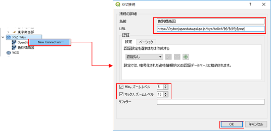

QGISで地理院タイルを表示する
QGISのレイヤで地理院タイルを表示するには、以下の手順で行います。
１． 「ブラウザ」パネルで [XYZ Tiles] を右クリックして [New Connection] をクリックします。
２．「XYZ接続」ダイアログで地図タイルのサイトURLを設定して [OK] をクリックします（ 下図参照：名称は自由に設定できます）。

ここで設定する「URL」は、地理院タイルの場合は、https://maps.gsi.go.jp/development/ichiran.html に載っていますので、目的の地図のURLを指定して使用ください。
※（地理院タイルを利用するときは、必ず、上記ページに記載されている規約に従って利用ください。）
３．作成されたタイルレイヤをダブルクリック（または右クリックして [選択したレイヤをキャンバスに追加] を選択）すればレイヤーパネルにタイルが読み込まれます。
※ Open Street Mapなど、他のXYZ形式のタイルも上記の方法で追加することもできます。（Open Streep Map の場合は、URLで「http://a.tile.openstreetmap.org/{z}/{x}/{y}.png」 と指定します）